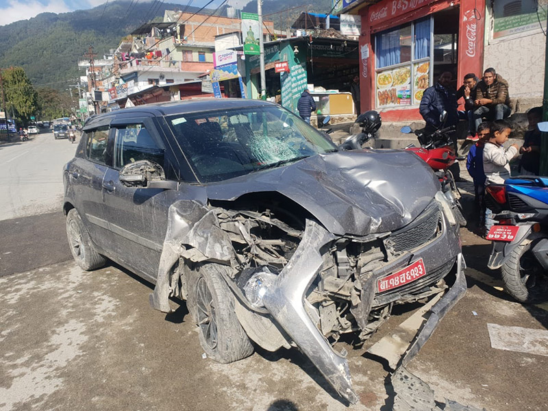
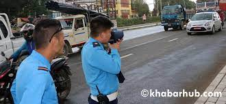

निकै लोकप्रिय भएकाले हेम्जामा सडक दुर्घटना दिनानुदिन बढ्दै गएको छ
हेम्जा क्षेत्र पोखरा-बागलुङ राजमार्गमा अवस्थित छ जुन पृष्ठभूमिमा पहाडको दृश्यसहितको नयाँ विस्तारित छ लेनको सडकको रमाइलो भएकाले आजकाल निकै लोकप्रिय छ।
पोखरा-बागलुङ राजमार्ग लगभग ७२ किलोमिटर सडक हो जुन 0 किलोमिटर पोखराबाट सुरु हुन्छ। यो नेपाल सरकारको १०९५ किलोमिटर मिडहिल राजमार्ग परियोजनाको एक हिस्सा हो।
पोखरा-बागलुङ नेपालको सबैभन्दा व्यस्त राजमार्ग हो जसले काठमाडौंलाई पोखरा र बागलुङ जोड्छ ।

हेम्जा सडकमा सडक दुर्घटना ।
निकै लोकप्रिय भएकाले हेम्जामा सडक दुर्घटना दिनानुदिन बढ्दै गएको छ ।
भाइरल हेम्जा सडकखण्डमा दैनिक ५/६ साना ठूला दुर्घटना भइरहेका छन् ।
गत साउन १ गते सडक दुर्घटनामा एक जनाको मृत्यु भएको थियो ।
जेठ २३ गते राति मोटरसाइकल दुर्घटनामा १ जनाको मृत्यु भएको थियो भने १ जना घाइते भएका थिए ।
माघ २६ गते मोटरसाइकल र जीप एक आपसमा ठोक्किँदा १ जनाको मृत्यु भएको थियो ।
जिल्ला ट्राफिक प्रहरीको तथ्यांकअनुसार करिब एक वर्षको अवधिमा सो हेमजा सडकमा १० जनाको ज्यान गएको छ । हेम्जा सडकखण्डमा अधिकांश दुर्घटना तीव्र गतिका कारण हुने गरेको छ ।
हेम्जा सडकमा दुर्घटनामा युवाको संख्या बढी छ । ओभरस्पीडका कारण १६ देखि २५ वर्षसम्मका धेरै दुर्घटना हुने गरेको देखिन्छ ।
हेम्जामा तीव्र गतिका कारण हुने सडक दुर्घटनालाई नियन्त्रण गर्न ट्राफिक अधिकृत आफैं हेम्जा सडकखण्डमा पुगेर गति नाप्ने यन्त्र (rader) मार्फत गति नापे ।

नियम अनुसार बजार क्षेत्रमा ४० किलोमिटर प्रतिघण्टाको गति तोकिएको छ । तर, त्यो सडकमा ८० देखि १२० किलोमिटर प्रतिघण्टाको गतिमा गाडी चलाएको पाइयो ।
ट्राफिक अधिकृतका अनुसार हेम्जा सडकमा तीव्र गतिमा सवारी चलाएको आरोपमा एकै दिन ४० जनाविरुद्ध मुद्दा दर्ता भएको छ ।
जीवन बचाउन तीव्र गतिमा सवारी साधन नियन्त्रण गर्नुहोस् र यो सडक दुर्घटना रोक्न हामी सबैले पहल गर्नुपर्छ ।
for more informatio.